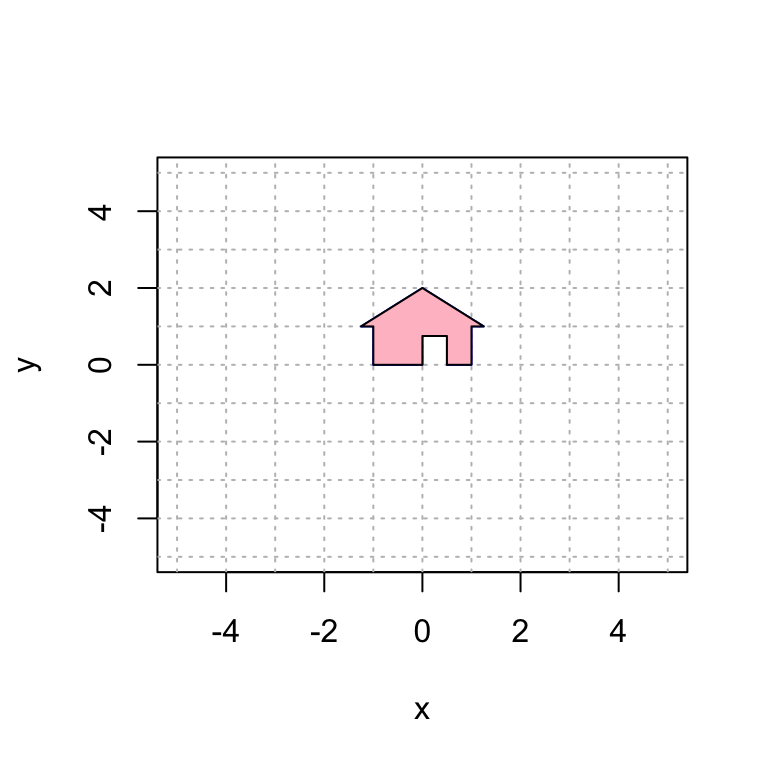

Section 18 Linear Transformations of a House
Download this Rmd file from GitHub
Here is a plot of my house. You will need to run this chunk of code each time you re-start R to get the house back in memory.
house = cbind(c(0,0), c(0,3/4), c(1/2,3/4), c(1/2,0), c(1,0), c(1,1), c(5/4,1), c(0,2), c(-5/4,1), c(-1,1), c(-1,0), c(0,0));
plot(house[1,],house[2,],type="n",xlim=c(-5,5),ylim=c(-5,5),xlab="x",ylab="y")
abline(h=-6:6, v=-6:6, col="gray", lty="dotted")
polygon(house[1,], house[2,], col = "gray", border = "blue")
Here we explore linear transformations on the plane by looking at their effect on my house.
We give a series of examples of 2D linear transformations. After each example, it’s your turn to play with variations from the same family of transformations.
18.1 Rotations
Suppose that we wish to rotate my house by pi/3 radians. As we’ve seen, a 2D rotation matrix by \(t\) radians, counter-clockwise, is given by
\[A=\displaystyle{ \begin{bmatrix} \cos(t) & -\sin(t) \\ \sin(t) & \cos(t) \end{bmatrix}}.\]
Here is the code to display this transformation.
Observe that I apply the matrix A to the house, call it house2 and plot both the original house and the new house in the same plot.
# define the matrix A. This is the only part you should need to edit.
t = pi/3
A = cbind(c(cos(t),sin(t)),c(-sin(t),cos(t)))
A # display the matrix A## [,1] [,2]
## [1,] 0.5000000 -0.8660254
## [2,] 0.8660254 0.5000000#----------------- this code applies the transformation and plots
# create a plot that we will add more layers to
house2 = A %*% house
plot(house[1,],house[2,],type="n",xlim=c(-5,5),ylim=c(-5,5),xlab="x",ylab="y")
abline(h=-6:6, v=-6:6, col="gray", lty="dotted") # add grid lines
polygon(house[1,], house[2,], col = "gray", border = "blue")
polygon(house2[1,], house2[2,], col = "pink", border = "black")
Try changing the angle above to achieve different rotations. How can you rotate it clockwise?
18.2 Expansion and contraction
Next, we scale the house by 2 in the \(x\)-direction and by 3 in the \(y\)-direction.
# define the matrix A. This is the only part you should need to edit.
A = cbind(c(2,0),c(0,3))
A # display the matrix A## [,1] [,2]
## [1,] 2 0
## [2,] 0 3#----------------- this code applies the transformation and plots
# create a plot that we will add more layers to
house2 = A %*% house
plot(house[1,],house[2,],type="n",xlim=c(-5,5),ylim=c(-5,5),xlab="x",ylab="y")
abline(h=-6:6, v=-6:6, col="gray", lty="dotted") # add grid lines
polygon(house[1,], house[2,], col = "gray", border = "blue")
polygon(house2[1,], house2[2,], col = "pink", border = "black")
Your turn: try some different scale factors. What if you use negative scale factors.
18.3 Reflection
Now we reflect over the line y = x.
# define the matrix A. This is the only part you should need to edit.
A = cbind(c(0,1),c(1,0))
A # display the matrix A## [,1] [,2]
## [1,] 0 1
## [2,] 1 0#----------------- this code applies the transformation and plots
# create a plot that we will add more layers to
house2 = A %*% house
plot(house[1,],house[2,],type="n",xlim=c(-5,5),ylim=c(-5,5),xlab="x",ylab="y")
abline(h=-6:6, v=-6:6, col="gray", lty="dotted") # add grid lines
polygon(house[1,], house[2,], col = "gray", border = "blue")
polygon(house2[1,], house2[2,], col = "pink", border = "black")Your turn: try the reflections (1) over the x-axis; (2) over the y-axis; and (3) through the origin, i.e., sending (x,y) to (-x,-y).
18.4 Shear Transformations
A shear transformation is of the form \[ A=\displaystyle{ \begin{bmatrix} a & b \\ 0 & c \end{bmatrix}} \quad \mbox{and} \quad A=\displaystyle{ \begin{bmatrix} a & 0 \\ b & c \end{bmatrix}} \] For example:
# define the matrix A. This is the only part you should need to edit.
A = cbind(c(1,0),c(1,1))
A # display the matrix A## [,1] [,2]
## [1,] 1 1
## [2,] 0 1#----------------- this code applies the transformation and plots
# create a plot that we will add more layers to
house2 = A %*% house
plot(house[1,],house[2,],type="n",xlim=c(-5,5),ylim=c(-5,5),xlab="x",ylab="y")
abline(h=-6:6, v=-6:6, col="gray", lty="dotted") # add grid lines
polygon(house[1,], house[2,], col = "gray", border = "blue")
polygon(house2[1,], house2[2,], col = "pink", border = "black")
You try: try to get the house to slant in the other direction.
18.5 Dimension Reduction
Here we perform the transformation that sends \(\mathsf{e}_1\) to \((-1,1/2)\) and \(\mathsf{e}_2\) to \((2,-1)\). Notice that they are the same line and the transformation projects the house onto this line.
# define the matrix A. This is the only part you should need to edit.
A = cbind(c(-1,1/2),c(2,-1))
A # display the matrix A## [,1] [,2]
## [1,] -1.0 2
## [2,] 0.5 -1#----------------- this code applies the transformation and plots
# create a plot that we will add more layers to
house2 = A %*% house
plot(house[1,],house[2,],type="n",xlim=c(-5,5),ylim=c(-5,5),xlab="x",ylab="y")
abline(h=-6:6, v=-6:6, col="gray", lty="dotted") # add grid lines
polygon(house[1,], house[2,], col = "gray", border = "blue")
polygon(house2[1,], house2[2,], col = "pink", border = "black")18.6 Your Turn
See if you can do the transformations in problem 3.3.
# define the matrix A. This is the only part you should need to edit.
A = cbind(c(1,0),c(0,1))
A # display the matrix A## [,1] [,2]
## [1,] 1 0
## [2,] 0 1#----------------- this code applies the transformation and plots
# create a plot that we will add more layers to
house2 = A %*% house
plot(house[1,],house[2,],type="n",xlim=c(-5,5),ylim=c(-5,5),xlab="x",ylab="y")
abline(h=-6:6, v=-6:6, col="gray", lty="dotted") # add grid lines
polygon(house[1,], house[2,], col = "gray", border = "blue")
polygon(house2[1,], house2[2,], col = "pink", border = "black")